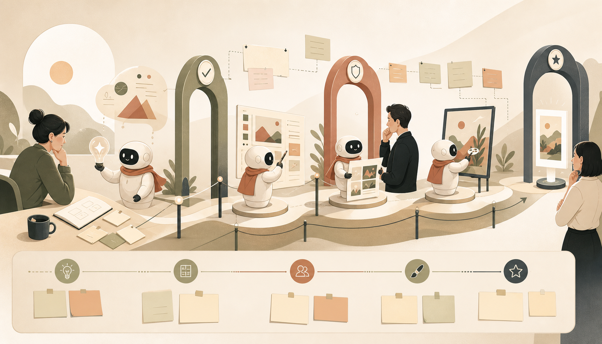

긴 작업을 수행하는 모델 시대, 안전·정렬 점검 기준이 더 중요해지다

OpenAI는 장시간 여러 단계를 수행하는 모델을 배포하면서 관찰한 실패 양상과 안전 장치의 필요성을 정리했습니다. 짧은 답변을 잘하는 모델과 달리, 긴 작업을 맡는 모델은 도중 목표를 잃거나 도구 사용을 잘못 이어 갈 수 있어 반복 배포와 평가 체계가 중요하다고 설명합니다.
현장 인사이트 — 창작 워크플로우에서 에이전트에게 리서치, 편집, 업로드 준비처럼 긴 과정을 맡길수록 중간 검수 지점이 필요합니다. 편리함은 커지지만 잘못된 파일 수정, 출처 누락, 의도와 다른 공개 같은 위험도 커지므로 체크리스트와 승인 단계를 작업 설계에 포함하는 편이 현실적입니다.